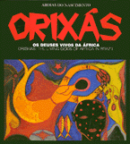

<body bgcolor="#FFFFFF" text="#000000" link="#0000FF" vlink="#CC0000" alink="#CC0000"><center><hr width="350" size="1" align="center" noshade>Work of Afro-Brazilian artist Nascimento now available to the U.S. market<hr width="350" size="1" align="center" noshade><p><a href="https://cdcshoppingcart.uchicago.edu/Cart/ChicagoBook.aspx?ISBN= &&PRESS=temple" target="_top">Buy this book!</a> | <a href="https://cdcshoppingcart.uchicago.edu/Cart/Cart.aspx?PRESS=temple" target="_top">View Cart</a> | <a href="https://cdcshoppingcart.uchicago.edu/Cart/Cart.aspx?PRESS=temple" target="_top">Check Out</a></p><p></p></center><!--none//--><h1>Orixás</h1>
<H2>Os Deuses Vivos da África<br>Orishas: The Living Gods of Africa in Brazil</H2>
<H2><!-- Foreword by Molefi Kete Asante --></H2>
<h3>Abdias do Nascimento, foreword by Molefi Kete Asante</h3>
<P>cloth 85-85853-018 $, Oct 97, <FONT COLOR=#990033>Out of Stock Unavailable</FONT>
<BR> 170 pp
10x11
74&nbsp;color&nbsp;illustrations
</P><BLOCKQUOTE><I>"No richer source of the African traditions exists in the Americas than Brazil, with the possible exception of Haiti. Out of the deepest crevices of culture from which comes the life blood of people, Abdias do Nascimento has found the wellspring of his creative power. I salute the reader and viewer of this book, because you have chosen a distinguished work of art."</I>
<br>&#151<b>Molefi Kete Asante</b>, Temple University<I></I></BLOCKQUOTE>
<p>Abdias do Nascimento's unique painting and poetry deeply immerse the reader and spectator in the religious culture of African origin in Brazil. Orishas and symbols of Yoruba and Central African origin, in their unique Brazilian context, join the deities of Egyptian, Asante, Ewe religions, and the voduns of Haiti. Together with African liberation heroes from all over the world, they interact in a living and dynamic imagery. Outstanding for its unique and unprecedented use of color, Abdias do Nascimento's art enriches and deepens our comprehension of the multiple dimensions of African culture in the world.
<p>This bilingual publication (English and Portuguese) is a tribute to the third centennial of Brazil's Pan-African liberation hero, Zumbi dos Palmares, who died fighting for his people's freedom in 1695. Zumbi symbolizes Afro-Brazilians and their culture, a heritage not only of the African world but of all humanity.
<p>The volume brings together scores of color reproductions of Nascimento's paintings, along with three epic poems and a major essay, all on themes of the Afro-Brazilian people, their religion, and its African origins. The book also contains critical essays by Molefi K. Asante, Muniz Sodr&eacute;, Roger Isaacs, Joel Rufino dos Santos, Elisa Larkin Nascimento, Ola Balogun, L&eacute;lia Gonz&aacute;lez, Gerardo Mello Mourão, Guerreiro Ramos, Anani Dzidzienyo, Daniel I. Larkin, and Cl&oacute;vis Brigag&atilde;o.
<p>Printed on the finest quality art paper in an oversized 10 x 11" format and packaged in an attractive slipcase, <i>Orix&aacute;s: Os Deuses Vivos da &Aacute;frica</i> features seventy-four full-color plates including ten gatefolds.
<p>Distributed by Temple University Press for IPEAFRO/Afrodiaspora, Rio de Janeiro
<BR>&nbsp;<h2>Contents</h2><P>
<p>Index of Illustrations
<br>Padê for Freedomfighter Eshu &#150 Abdias do Nascimento
<br>Foreward &#150 Molefi Kete Asante
<br>Preface &#150 Elisa Larkin Nascimento
<br>Afro-Brazilians and the Orishas &#150 Abdias do Nascimento
<br>The Agadá of transformation &#150 Abdias do Nascimento
<br>Griot and Warrior &#150 Lélia González
<br>Abdias in the World Museum of the Imaginary &#150 Gerardo Mello Mourão
<br>Abdias Painter &#150 Napoleão Lopes Filho
<br>Abdias do Nascimento's Tribal World &#150 Guerreiro Ramos
<br>Abdias and the Bow of Oshossi &#150 Daniel Irving Larkin
<br>Abdias' Pictorial Gnosticism &#150 Muniz Sodré
<br>Breacher of Limits &#150 Joel Rufino dos Santos
<br>Our Debt to Abdias &#150 Anani Dzidzienyo
<br>Work, Ideas and Personality &#150 Clóvis Brigagão
<br>The Ethic of Liberty &#150 Roger M. Isaacs
<br>Yemanja's Child Paints the World &#150 Ola Balogun
<br>Abdias do Nascimento's Painting &#150 Efraín Tomás Bó
<br>Axexé in Oshala &#150 Abdias do Nascimento
<br>Glossary
<br>Translator's Note
<br>References
<br>Bibliography
<br>About the Authors and Texts
<br>Bibliographical Sketch of the Artist
<br>Exhibitions
</P><BR>&nbsp;<H2>About the Author(s)</H2>
<P><B>Abdias do Nascimento</B> is Professor Emeritus, State University of New York at Buffalo, and Doutor Honoris Causa, State University of Rio de Janeiro. Born in 1914 in Brazil, a grandchild of enslaved Africans, Nascimento founded the Black Experimental Theater in Rio de Janeiro in 1944, breaking the color bar in Brazilian theater. In 1968 he founded the Black Arts Museum in Rio de Janeiro. In 1971 he founded the Chair of African Culture in the New World at the Puerto Rican Studies and Research Center, State University of New York at Buffalo, where he taught until 1981. In 1990 he was elected to the Senate seat from Rio de Janeiro and in 1991 he was appointed State Secretary for the Defense and Promotion of Afro-Brazilian Peoples. Nascimento is currently a member of the Rio de Janeiro State Council of Culture and President of the Zumbi memorial, an Afro-Brazilian organization of national scope.</P>
<BR><H2>Subject Categories</H2>
<p><A HREF="/tempress/art.html" TARGET="_top">Art and Photography</a>
<BR><A HREF="/tempress/african.html" TARGET="_top">African American Studies</a>
</p>
<p align="center"><a href="https://cdcshoppingcart.uchicago.edu/Cart/ChicagoBook.aspx?ISBN= &&PRESS=temple" target="_top">Buy this book!</a> | <a href="https://cdcshoppingcart.uchicago.edu/Cart/Cart.aspx?PRESS=temple" target="_top">View Cart</a> | <a href="https://cdcshoppingcart.uchicago.edu/Cart/Cart.aspx?PRESS=temple" target="_top">Check Out</a></p><p><font face="Arial" size="1"><a href="copyright.html" onMouseOver="window.status='Web Copyright Policy';return true;" onMouseOut="window.status=''" title="Web Copyright Policy">&copy;</a> 2015 <a href="http://www.temple.edu" target="new" onMouseOver="window.status='Link to Temple University home page';return true;" onMouseOut="window.status=''" title="Link to Temple University home page">Temple University</a>. All Rights Reserved. http://www.temple.edu/tempress/titles/1402_reg.html</font></p>